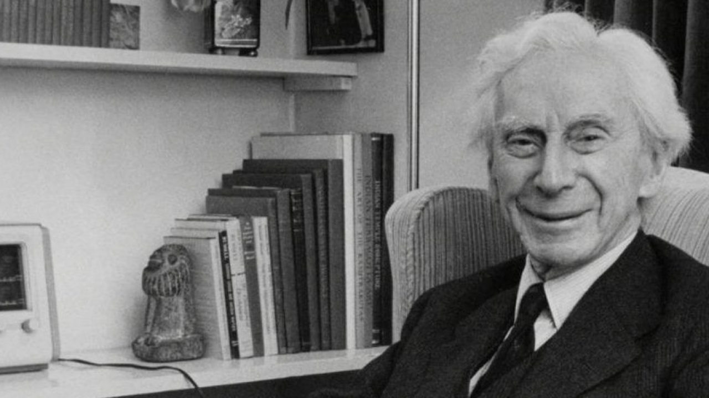

birth of Bertrand Arthur William Russell, son of John Russell (Lord Amberley) and Katherine (Kate) Stanley. Russell had a brother, John Francis Stanley Russell (Frank), born 1865 and a sister Rachel, b. 1868, d. 1874. Russell's parents were considered as political radicals and religious "free-thinkinkers", ie. atheists. 
death of Russell's sister Rachel, also of diptheriaj
eath of Russell's father, of bronchitis. John Russell named as guardians two men known to be atheists - Cobden-Sanderson, Russell's god-father and D. A. Spalding, tutor to Frank. Spaldking, who suffered from tuberculosis, was found to have been intimate with Russell's mother, and the ensuing scandal led to the two children being placed with his grandparents (Feb. 1876). .2 These were Lord John Russell (1792-1878) and Lady Frances Elliot. Lord John had been prime minister of England (get dates); his lodgings - Pembroke House - were a gift from Queen Victoria.
death of grandfather, Lord John Russell. Russell was raised through childhood and youth by his grandmother, described as a Scottish Presbyterian by birth, a Puritan in morals and a Unitarian (at age 70) in religion
Russell was schooled at home by hired educators, and kept a diary, coded in Greek, about his religious views and personal concerns.4 One of them, Mr. Ewen was interested in Marx and non-Euclidean geometry, and a defender of reason.5 Russell also met with the physicist Tyndall, a popularizer of science and scientific method.6
Russell met Alyls Pearsall Smith during the summer, when her family, originally from the US, came to live nearby. Like her parents, she was a Quaker.9 She was five years older than Russell.
Russell arrived at Trinity in Oct. 1890, where as a scholarship winner (one of 6 entrance scholarships good for three years), he was granted rooms in college.10 The scholarship examiner was Alfred North Whitehead, who impressed with Russell's philosophical grasp of mathematics, recommended him over another student who actually had a higher examination grade.11
Russell was at Trinity, where he studied for the mathematical tripos, which he finished as "seventh wrangler".12 During his time at Trinity, Russell met and became friends not only with Whitehead, but also with Charles Sanger (mathematics), G. E. Moore (philosophy), McTaggart (already a philosophy professor at the college), and others. He was strongly influenced by the idealism of Kant and Hegel, which McTaggart defended.
Russell joined the University Moral Science Club.13
Russell was invited to join the "Apostles" or Society (full name: Cambridge Conversazione Society", whose membership was limited to 12.14
Russell 'came of age' (at 21), and he now had legal independence as well as a 20,000 pound inheritance from his father's estate, which provided him with 600 pounds income yearly.15
Russell completed his mathematical undergraduate course of study, and was listed (bracketed) as 7th Wrangler in Mathematical Tripos.
Russell began full time studies in philosophy, leading to Moral Sciences Tripos.
Russell received honors status (first class with distinction) at the Moral Sciences tripos.16
"crammed" for entry to Cambridge at B. A. Green's University and Army Tutors at Southgage, London, where he spent 18 months. During this time he wrote a number of essays on philosophical and political themes. Russell was accepted at Trinity in Dec. 1889, winning a scholarship in mathematics
Despite the opposition of both families, Russell and Alys reveal their intention to marry. Lady Russell attempted to discourage the affair, claiming that insanity was rampant in Russell's family and likely to affect any offspring. Russell accepted to be apart from Alys for three months and became honorary attach� to the British ambassador to Paris, Lord Dufferin during fall 1894 .17
Marriage of Russell and Alys, followed by a honeymoon in Holland, at the Hague (three weeks), 18 then a longer stay in Berlin and Germany
While in Germany Russell was going to work on a book on the philosophical/mathematical foundations of geometry, which would be his Cambridge Fellowship thesis; he also enrolled to read in economics at Berlin University. He was undecided between philosophy and politics as a career.19
While working one day in the Tiergarten at Berlin, Russell had a moment of inspiration: he would devote his life to writing two "strands" of work - the first a series of books on philosophy of the sciences, the second a "parallel" series on social problems, to eventually meet in a "synthesis at once scientific and practical".20
Death of Lady Stanley of Alderley, Russell's grandmother (maternal)
After Germany, the Russell's travel in Italy. Upon their return to England, they lived in a small cotttage north of Fernhurst village. Having decided to opt for philosophy as a career, Russell worked on his fellowship thesis, to be submitted to a Prize competition. 21 The thesis was submitted in August and was judged by Whitehead (for the mathematical aspects) and James Ward (for the philosophical aspects).22 Russell was successful, and obtained a six year fellowship, with rights to use Trinity facilities, but no teaching or residency requirements.23 (Oct. 10, 1895)
Russell and Alys returned to Germany to research into the German Social Democratic Party.24
Russell's views on socialism in Germany were given at a talk for the Fabian society, and then as a course of 6 lectures for the London School of Economics (founded by the Webbs). This also lead to his first published book, German Social Democracy (1896), with an appendix by Alys.25
attended International Socialist Congress at London.
autumn - Russell's first trip, with Alys, to the US. He gave a short series of lectures on the foundations of geometry at Bryn Mawr College, whose president, Dr. Carey Thomas, was cousin to Alys.26 . Delivers six lectures on "Foundations of Geometry" at Bryn Mawr College (Nov. 2-20) and Johns Hopkings University (Dec. 2-11). They also visited Harvard College. (verify)
back in England, Russell's book, An Essay on the Foundations of Geometry, based on his fellowship thesis, was published (1897).
During this time, Russell began, under the influence of Moore, to reject idealism.28
death of paternal grandmother, Countess Russell.
Russell arrived at Trinity in Oct. 1890, where as a scholarship winner (one of 6 entrance scholarships good for three years), he was granted rooms in college.10 The scholarship examiner was Alfred North Whitehead, who impressed with Russell's philosophical grasp of mathematics, recommended him over another student who actually had a higher examination grade.11
Russell was at Trinity, where he studied for the mathematical tripos, which he finished as "seventh wrangler".12 During his time at Trinity, Russell met and became friends not only with Whitehead, but also with Charles Sanger (mathematics), G. E. Moore (philosophy), McTaggart (already a philosophy professor at the college), and others. He was strongly influenced by the idealism of Kant and Hegel, which McTaggart defended.
Russell joined the University Moral Science Club.13
Russell was invited to join the "Apostles" or Society (full name: Cambridge Conversazione Society", whose membership was limited to 12.14
Russell 'came of age' (at 21), and he now had legal independence as well as a 20,000 pound inheritance from his father's estate, which provided him with 600 pounds income yearly.15
Russell completed his mathematical undergraduate course of study, and was listed (bracketed) as 7th Wrangler in Mathematical Tripos.
Russell began full time studies in philosophy, leading to Moral Sciences Tripos.
Russell received honors status (first class with distinction) at the Moral Sciences tripos.16
"crammed" for entry to Cambridge at B. A. Green's University and Army Tutors at Southgage, London, where he spent 18 months. During this time he wrote a number of essays on philosophical and political themes. Russell was accepted at Trinity in Dec. 1889, winning a scholarship in mathematics
May, manuscript of Principles sent to publisher.
Rereading Frege's Foundations of Arithmetic (Grundgesetze)Russell saw that Frege's system fell victim to the paradoxes of the infinite
he wrote to Frege to this effect, using the example of predicates that cannot be predicated of themselves.37 Russell modified the proofs of his own book (ch. 10) and added two appendices (one on Frege's work, one on his tentative formulation of the theory of types to avoid the paradoxes.)38.
letter with first version of theory of types to Frege.
publication of The Principles of Mathematics, in which Russell argues for the reduction of mathematics to logic. A second volume, ultimately to become Principia Mathematica in three volumes, was begun with Whitehead.39
publication of "The Free Man's Worship" in The Independent Review, considered to be a highly literary piece and much reproduced. (reprinted in Philosophical Essays and other selections.)
Despite the opposition of both families, Russell and Alys reveal their intention to marry. Lady Russell attempted to discourage the affair, claiming that insanity was rampant in Russell's family and likely to affect any offspring. Russell accepted to be apart from Alys for three months and became honorary attach� to the British ambassador to Paris, Lord Dufferin during fall 1894 .17
Russell joined the council of the National Union of Women's Suffrage Societies (NUWSS)
Marriage of Russell and Alys, followed by a honeymoon in Holland, at the Hague (three weeks), 18 then a longer stay in Berlin and Germany
Russell is a candidate for parliament on the Women's Suffrage ticket in Wimbledom.43. Russell supported full adult suffrage, not just woman's suffrage equal to the then restricted male suffrage, but suported the NUWSS for this more limited demand as he felt it more easily realisable.44 He was elected to the executive council in Feb. 1907.l
While in Germany Russell was going to work on a book on the philosophical/mathematical foundations of geometry, which would be his Cambridge Fellowship thesis; he also enrolled to read in economics at Berlin University. He was undecided between philosophy and politics as a career.19
While working one day in the Tiergarten at Berlin, Russell had a moment of inspiration: he would devote his life to writing two "strands" of work - the first a series of books on philosophy of the sciences, the second a "parallel" series on social problems, to eventually meet in a "synthesis at once scientific and practical".20
Death of Lady Stanley of Alderley, Russell's grandmother (maternal)
After Germany, the Russell's travel in Italy. Upon their return to England, they lived in a small cotttage north of Fernhurst village. Having decided to opt for philosophy as a career, Russell worked on his fellowship thesis, to be submitted to a Prize competition. 21 The thesis was submitted in August and was judged by Whitehead (for the mathematical aspects) and James Ward (for the philosophical aspects).22 Russell was successful, and obtained a six year fellowship, with rights to use Trinity facilities, but no teaching or residency requirements.23 (Oct. 10, 1895)
Russell and Alys returned to Germany to research into the German Social Democratic Party.24
Russell's views on socialism in Germany were given at a talk for the Fabian society, and then as a course of 6 lectures for the London School of Economics (founded by the Webbs). This also lead to his first published book, German Social Democracy (1896), with an appendix by Alys.25
attended International Socialist Congress at London.
autumn - Russell's first trip, with Alys, to the US. He gave a short series of lectures on the foundations of geometry at Bryn Mawr College, whose president, Dr. Carey Thomas, was cousin to Alys.26 . Delivers six lectures on "Foundations of Geometry" at Bryn Mawr College (Nov. 2-20) and Johns Hopkings University (Dec. 2-11). They also visited Harvard College. (verify)
back in England, Russell's book, An Essay on the Foundations of Geometry, based on his fellowship thesis, was published (1897).
During this time, Russell began, under the influence of Moore, to reject idealism.28
death of paternal grandmother, Countess Russell.
McTaggart left to visit relatives in New Zealand, and Russell was invited to give a series of lectures on Leibniz, in his place.29
attended the International Congress of Philosophy, Logic, and the History of Science at Paris, with Whitehead and his wife Evelyn, and Alys (who read a paper on the education of women).30 Russell's paper (in French) was read on Aug. 2, "Is Position in Time and Space Absolute or Relative" (as published, in part, by the Monist), to an audience including Bergson, Poincar�, Couturat and Peano.31 In particular, Russell got a set of offprints of Peano's papers from him, from whom he learned more about Peano's logical formalism, and also about Frege's work on the foundations of mathematics.32
publication of A Critical Exposition of the Philosophy of Leibniz: With an Appendix of Leading Passages. Russell argued that there was an inconsistency at the heart of Leibniz's system, but was influenced by certain of his views (the logical definition of equality as identity of indiscernibles, and the notion of compossibles that would be important for Russell's later ethical theory).
returning to England, Russell began using the new formalism and ideas about logic to produce a work on the foundations of mathematics. The 200 thousand plus word draft for The Principles of Mathematics was finished in early Dec.33
working on the revision of Principles, Russell discovered the paradoxes of the infinite involving the set of all sets not members of themselves.34 He deferred final resolution of the problem (and related paradoxes), and continued to work on the text of Principles.
End of Russell's Prize fellowship. He was invited to lecture for a number of terms in mathematical logic. Russell and Alys move in with the Whitheads.35
"The Logic of Relations: With Some Applications to the Theory of Series", in Riv. di Matematica, using Peano's notations.
conversion experience as a result of Evelyn Whitehead's heart attack (angina?) and intense pain.36 [get quote from Autobiog.] Russell, previously a supporter of the Boer war (a liberal imperialist) becomes a pacifist.
May, manuscript of Principles sent to publisher.
Rereading Frege's Foundations of Arithmetic (Grundgesetze)Russell saw that Frege's system fell victim to the paradoxes of the infinite
he wrote to Frege to this effect, using the example of predicates that cannot be predicated of themselves.37 Russell modified the proofs of his own book (ch. 10) and added two appendices (one on Frege's work, one on his tentative formulation of the theory of types to avoid the paradoxes.)38.
letter with first version of theory of types to Frege.
publication of The Principles of Mathematics, in which Russell argues for the reduction of mathematics to logic. A second volume, ultimately to become Principia Mathematica in three volumes, was begun with Whitehead.39
publication of "The Free Man's Worship" in The Independent Review, considered to be a highly literary piece and much reproduced. (reprinted in Philosophical Essays and other selections.)
article on "On Denoting" in Mind, where Russell argues that subject-predicate analysis is inadquate, that existence is not a predicate, and introduces the idea of logical form of sentences. 41
Russell joined the council of the National Union of Women's Suffrage Societies (NUWSS)
Elected to executive committee of National Union of Women's Suffrage Societies.42
Russell is a candidate for parliament on the Women's Suffrage ticket in Wimbledom.43. Russell supported full adult suffrage, not just woman's suffrage equal to the then restricted male suffrage, but suported the NUWSS for this more limited demand as he felt it more easily realisable.44 He was elected to the executive council in Feb. 1907.l
Russell elected Fellow of the Royal Society
"Mathematical Logic as Based on the Theory of Types", in Am. J. Math. - sets out his theory of types to avoid antinomies.
"Mathematical Logic as Based on the Theory of Types", in Am. J. Math. - sets out his theory of types to avoid antinomies.
Russell joined the People's Suffrage Federation.45. Russell switched to the The People's Suffrage Federation because it favored universal suffrage after a brief residential qualification, and in January 1910 was on its executive. (Nov. 1909 - resigned from executive council of NUWSS) Russell was a public supporter of the PSF until 1913; it folded in 191646.